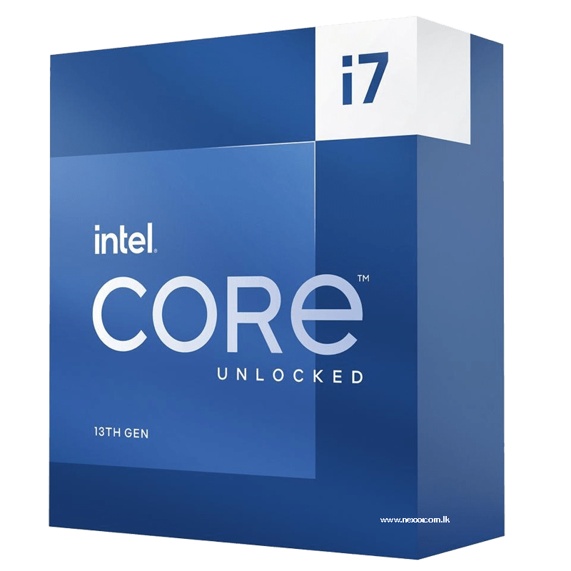

>Intel Core i7-13700K

16 núcleos (8 de rendimiento y 8 de eficiencia) y 24 hilos, el i7-13700K alcanza hasta 5.4 GHz en modo turbo, ofreciendo un rendimiento de alto nivel tanto para juegos como para multitarea. Compatible con DDR4 y DDR5, es perfecto para quienes buscan una combinación de potencia y eficiencia en sus PC de gaming.
p